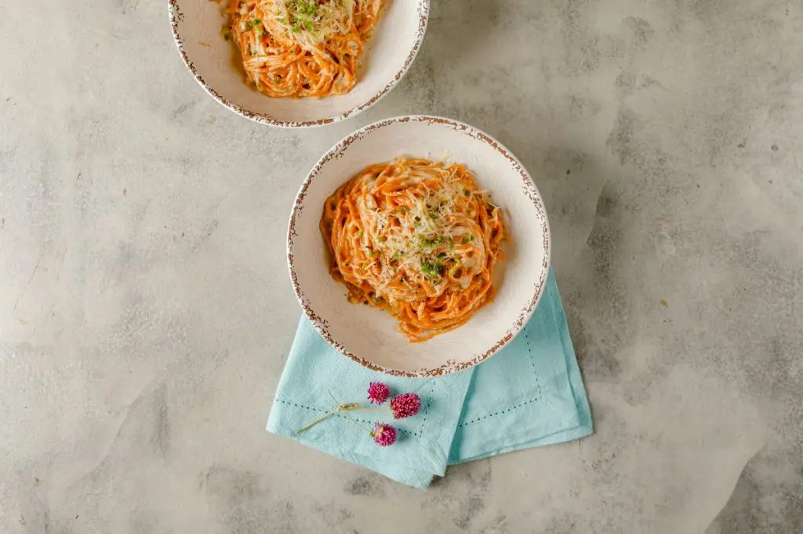

60 Minutos
Pasta con salsa de nuez

- Harina 0000 - 430 Gramos
- Huevos - 2 Unidades
- Puré de morrón - 1 Unidad
- Aceite de oliva - 1 Chorrito
- Leche - 250 Centimetros Cubicos
- Miga de pan - 30 Gramos
- Ajo - 1 Diente
- Nueces - 75 Gramos
- Aceite - 1 Chorrito
- Crema de leche - 150 Gramos
- Alcaparras - 2 Cucharas
- Queso rallado - A gusto
Para la Pasta
Para la salsa de nuez
- Verter harina en la fábrica de pastas y cuando comience a mezclar agregar de a poco la mezcla de huevos, puré de morròn asado y aceite de oliva.
- Dejar que amase y cuando comiencen a salir cortar los fideos según la longitud deseada.
- Reservar en nidos espolvoreados con semolín.
- Remojar la miga de pan con leche caliente y aplastar con tenedor.
- Licuar la miga de pan remojada, diente de ajo, nueces, aceite de oliva y reservar.
- Llevar la mezcla a una sartén y cuando se caliente agregar crema de leche, alcaparras, queso rallado y dejar espesar.
- Cocinar los fideos al dente y agregar a la sartén con la salsa.
- Cocinar 1 minuto y servir con queso rallado, romero y aceite de oliva por encima.
Para la pasta
Para la salsa
Mas Recetas

Mazorcas con Salsas
Aprende a preparar esta receta de Mazorcas con Salsas, por Federico Trujillo.
Ir a PaginaCheesecake Light sin Horno
Aprende a preparar esta receta de Cheesecake Light sin Horno, por Gonzalo D´Ambrosio.
Ir a Pagina